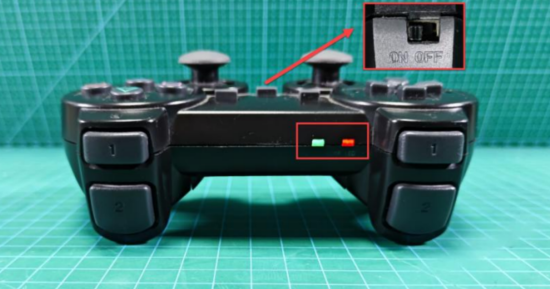
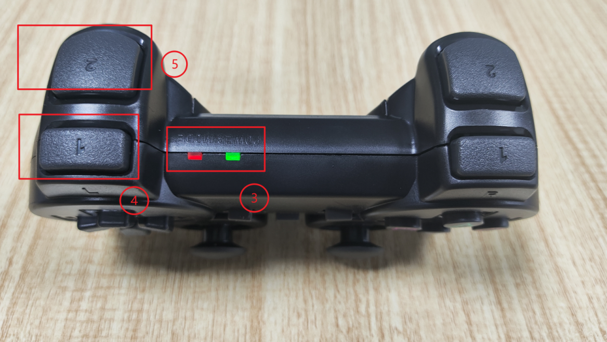
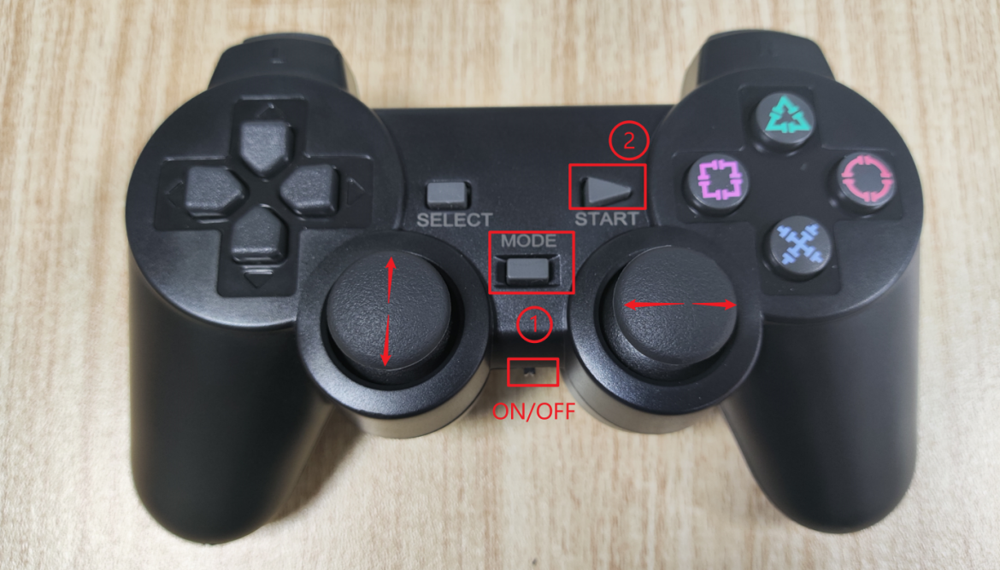

🎮 Remote Control Setup for RobiS Robot
This section describes how to use the remote controller to operate your RobiS robot. Remote control system includes a onboard receiver and a PS2 joystick remote controller, they both have red and green indicator lights.
The joystick button description
🔌 Step-by-Step Instructions
Power On
Turn on the robot by pressing the power button.
Switch on the controller


Both solid red and green lights indicate a successful connection.
Unlock Remote Control Mode

Every time after turning on the robot power, remote control needs to be unlocked.
- Press the Mode button.
- Then press START to activate remote control mode.
Controls Overview
| Button/Joystick | Function |
|---|---|
| Mode | Wake up / exit sleep |
| START | Enter remote control mode |
| Left joystick | Move robot forward/backward |
| Right joystick | Rotate robot left/right |
| L1 | Increase speed (max 1.5 m/s) |
| L2 | Decrease speed (min 0) |
| Remote Indicator | Flashing = pairing, Solid = connected |
💡 Other buttons currently have no assigned function.
🛑 Sleep Mode
- If unused for 5 minutes, the controller enters sleep.
- To wake it up, press the Mode button then press Start to unlock.
⚠️ Usage Precautions
- Ensure the remote controller receiver is plugged into the robot.
- Install batteries with correct polarity.
- When using multiple robots, match them one-by-one to avoid cross-control.